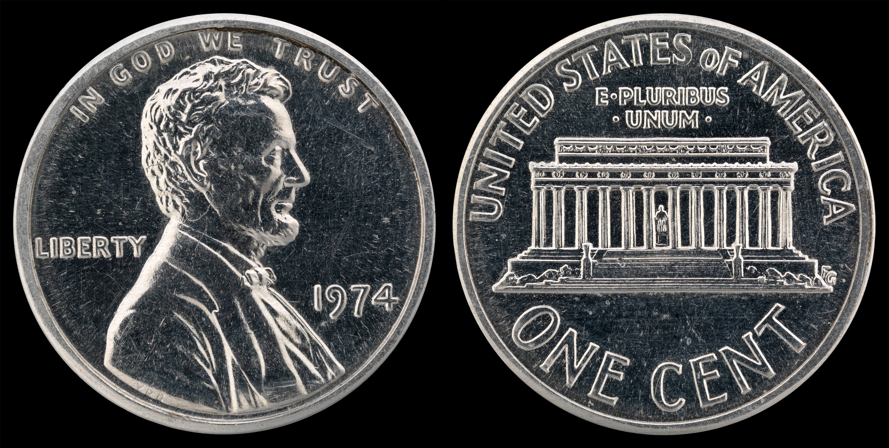
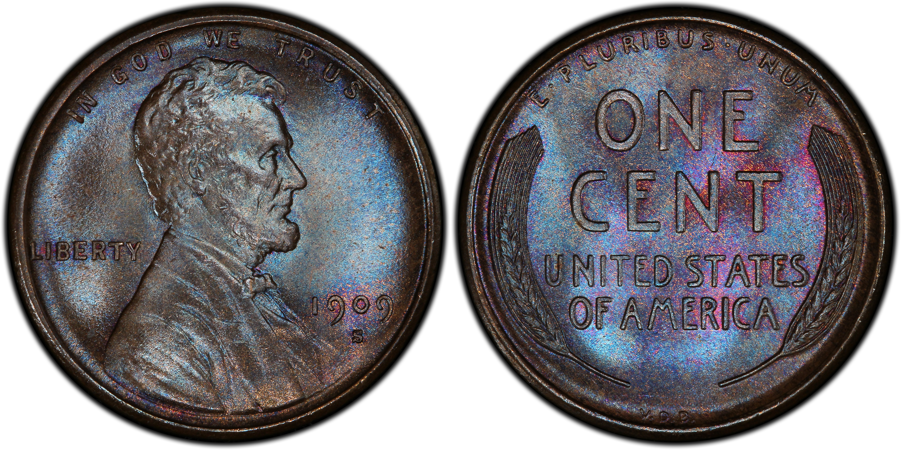
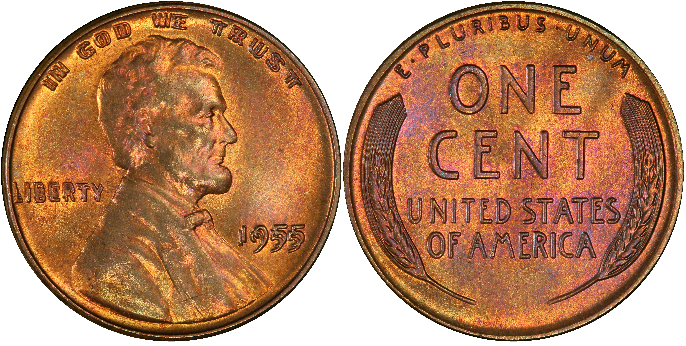

Welcome to my website!
1909-S VDB Lincoln Cent
The 1909-S VDB Lincoln Cent is one of the most famous American coins.
These are the three pennies I would most like to add to my collection.

1974 Aluminum Penny - This was released in 1974 to test a new planchet for pennies as copper planchets costed more than $0.01. It is illegal for anyone to own as the government never released it to the public.
Learn more on PCGS2nd Link is for opening in new tab
Learn more about this coin on PCGS1974 Aluminum Penny - This was released in 1974 to test a new planchet for pennies as copper planchets costed more than $0.01. It is illegal for anyone to own as the government never released it to the public.
Learn more on PCGS2nd Link is for opening in new tab
Learn more about this coin on PCGS
The 1909-S VDB Penny is the pinnacle of modern numismatics, with a limited mintage of just 484,000, after the large designer's initials on the back caused an uproar
Learn more about this coin on PCGS
1955 DDO(Double Die Obverse) is one of the most recognizable and famous penny errors. It features heavy doubling on the date, motto, and "Liberty".
Learn more about this coin on PCGS